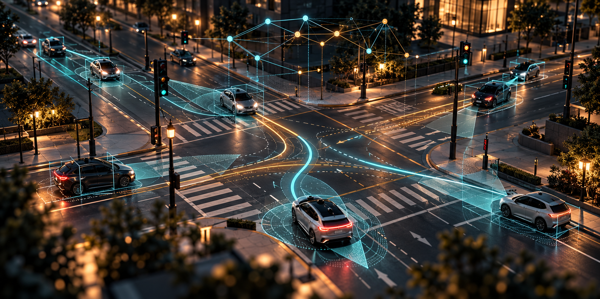

PATENT / WO2022223952A1
Reinforcement learning for autonomous vehicle coordination
Traffic control at an intersection

Explores intersection control using a neural-network-based control agent that communicates with vehicles approaching an intersection. The aim is to coordinate vehicle movements through complex, mixed-traffic scenarios while improving the ability to manage safe crossing behaviour.
Why it matters
The invention explores cooperative, learning-based traffic management where vehicle movement is coordinated through communication rather than relying only on fixed traffic-light phases.
At a glance
Technology area: Autonomous systems · Neural networks · Traffic control.
This is an executive-level summary, not legal advice or a substitute for the patent claims. See the published record for the authoritative description, inventors and legal status.
Read patent record ↗